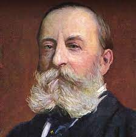
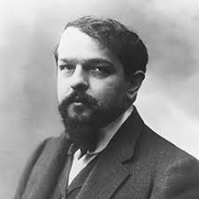

webcomposers
Este site tem como objetivo dar a conhecer ao público diferentes compositores
em diferentes épocas e contextos
ao longo da História da Música.
Todas as semanas será aqui publicado um compositor/a difrente.

